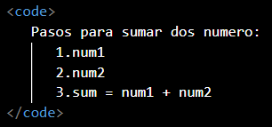
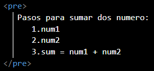
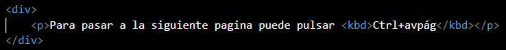
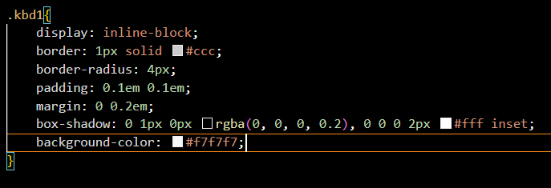
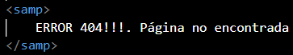
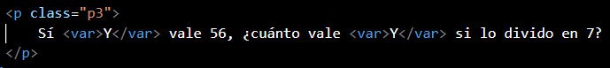
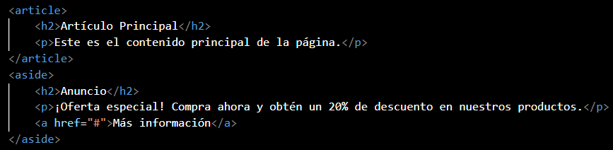
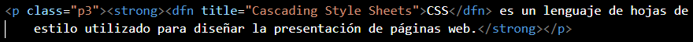

ETIQUETA BLOCKQUOTE
La etiqueta blockquote se utiliza para crear un bloque o sección donde aparezca
un texto que es una cita o referencia a una obra o fuente de información.
Ejemplo: utilizando -blockquote- como una etiqueta de agrupación.
El único conocimiento verdadero es saber que no sabes nada.
Sócrates
ETIQUETAS MAIN, SECTION Y ARTICLE
A continuación, explicare para que sirven las etiquetas main, section y article.
MAIN
El elemento main es un contenedor para los temas centrales de un documento o sección. Este
contenido central puede interpretarse como todo lo que resta luego de quitar anuncios, encabezados
(header), pies (footer), secciones de navegación (nav), vínculos relacionados y otros elementos
secundarios.
El elemento main tiene mayor importancia para personas con discapacidades, que
habitualmente acceden a la web a través de programas especiales como los navegadores de voz. En
tales casos, los navegadores pueden ser instruidos para ir directamente al contenido principal del
documento o sección (main), saltándose toda la información menos relevante.
SECTION
La etiqueta sección define las secciones de un documento, como capítulos, encabezados, pies de
página o cualquier otra sección del documento.
"Una sección es un agrupamiento temático de contenido, normalmente con un encabezado".
ARTICLE
El elemento -article- es un contenedor de bloques de contenido que se consideran
independientes del sitio web y pueden, por lo tanto, ser vistos, reutilizados y distribuidos por
separado, como por ejemplo, en las indicación. Puedes encontrar habitualmente a este elemento
encerrando artículos, entradas de blogs o mensajes de un foro.
ETIQUETAS CODE, PRE
CODE
La etiqueta -code- se utiliza cuando se quiere definir un fragmento o ejemplo
de código en línea, sin saltos de línea, escrito en cualquier tipo de lenguaje
de programación. Por defecto, -code- se visualiza con un tipo de letra
monoespaciado.
Ejemplo:

Pasos para sumar dos numero:
1.num1
2.num2
3.sum = num1 + num2
PRE
La etiqueta -pre- se utiliza cuando queremos definir un texto preformateado en
el que se respetan los espacios en blancos, loa tabuladores y los saltos de línea
(HTML por defecto no es capaz de hacerlo)
Ejemplo:

Pasos para sumar dos numero:
1. num1
2. num2
3. sum = num1 + num2
ETIQUETA KBD
Se utiliza cuando queremos definir un texto que se debe introducir en el ordenador
y un comando o un atajo de teclado. Por defecto KBD se visualiza con un tipo de
letra monoespaciado.
Ejemplo sin hoja de estilos

Para pasar a la siguiente pagina puede pulsar Ctrl+avpág
Ejemplo con hoja de estilos

Para pasar a la siguiente pagina puede pulsar Ctrl+avpág
SAMP
La etiqueta -samp- se utiliza cuando queremos definir un contenido que es la salida
de un programa o de un fragmento de código. Como un mensaje de error.
Ejemplo:

ERROR 404!!!. Página no encontrada
VAR
Se utiliza cuando queremos definir una variable que forma parte de una fórmula
matemática o de un código. Por defecto -var- se visualizará en cursiva.
Ejemplo:
Sí Y vale 56, ¿cuánto vale Y si lo divido en 7?

ETIQUETA HEADER
El elemento header en HTML se utiliza para representar la sección introductoria o
encabezado de un documento o de una sección de contenido. Por lo general, se coloca
en la parte superior de la página web y puede contener elementos como el logotipo,
el título de la página, la navegación principal, o cualquier otro contenido
introductorio que desees mostrar. El uso de header ayuda a estructurar y dar
sentido a la información en una página web, facilitando la navegación y la comprensión del
contenido.
Ejemplo:
ETIQUETAS FIGURE-FIGCAPTION
El elemento figure representa a una pieza de documento autocontenido que se utiliza
habitualmente para encerrar imágenes, gráficos, tablas de referencia, videos, poemas,
fragmentos de código, etc. Podrían ser acompañada por una leyenda o título
(figcaption) que puede usarse para hacer una referencia al fragmento desde alguna
otra parte del documento. Además del título opcional, un elemento figure puede contener a
otros elementos como imágenes (img), párrafos (p), código de computadora (code), citas
(cite), etc.
Ejemplo
Análisis basados en databooks
ETIQUETA ASIDE
La etiqueta (aside) en HTML se utiliza para marcar contenido relacionado o secundario
que está separado del contenido principal de la página, pero que aún guarda cierta
relevancia. Por lo general, se coloca en el lado, superior o inferior de una sección
principal y puede contener información adicional, como anuncios, enlaces relacionados,
widgets, comentarios, etc.
La etiqueta (aside) es útil para estructurar y separar contenido complementario de la
información principal de una página web, ayudando a los usuarios a identificar y
distinguir fácilmente estos elementos secundarios.
Ejemplo:
Artículo Principal
Solo para amantes del verdadero café.

ETIQUETA DFN
La etiqueta dfn en HTML se utiliza para marcar y definir un término
en un documento. "dfn" significa "definición" en inglés, y esta etiqueta se usa para
indicar que el texto que contiene es una definición o descripción del término al que
se refiere. Es especialmente útil cuando deseas proporcionar una explicación o
definición de un término técnico o poco común en tu contenido.
Ejemplo: En este ejemplo, dfn se utiliza
para definir la abreviatura "CSS" y proporciona una descripción utilizando el
atributo "title". Cuando un usuario coloca el cursor sobre "CSS" en la página, verá
una información sobre herramientas emergente con la definición "Cascading Style
Sheets". Esto ayuda a aclarar el significado de términos técnicos o abreviaturas.

CSS es un lenguaje de hojas de
estilo utilizado para diseñar la presentación de páginas web.